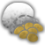
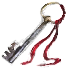

Золото
Предметы / Ресурсы
Открыть в интерактивной вики →
Описание
Основной платежный ресурс в игре. Можно получить выполняя задания, убивая монстров, торгуя с игроками или NPC, открывая платиновые сундучки с помощью

Платиновый Ключ.Оплата за
Упоминается в
Барсук(физ), Барсук(маг), Назгулица(физ), Назгулица(маг), Бутыль из толстого стекла, Яд Убийц, Манамер, Экстрактор, Молот Таралакса, Субвульсор, Бивульсор, Магнивульсор, Архивульсор, Ограненный Галит, Ограненный лиметит, Драконьи Клыки, Драконий глаз, Драконье Дыхание, Драконий Коготь, Драконье Сердце, Ловец, Ловец, Херевальд, Перевозчик